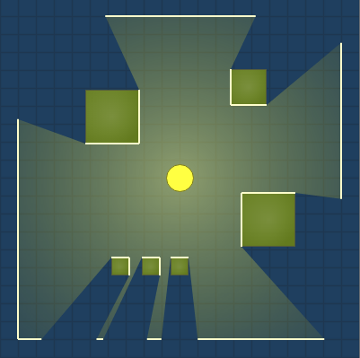

CS 357 Project
2D Visibility
Optimization
Krishna Chaitanya /
ee1200206@iiti.ac.in
Surya Teja /
cse1200136@iiti.ac.in
2D Visibility

2D Visibility
Applications
Game Engines
AI Engines
Automated warcrafts
Security Devices
Cameras / Videography